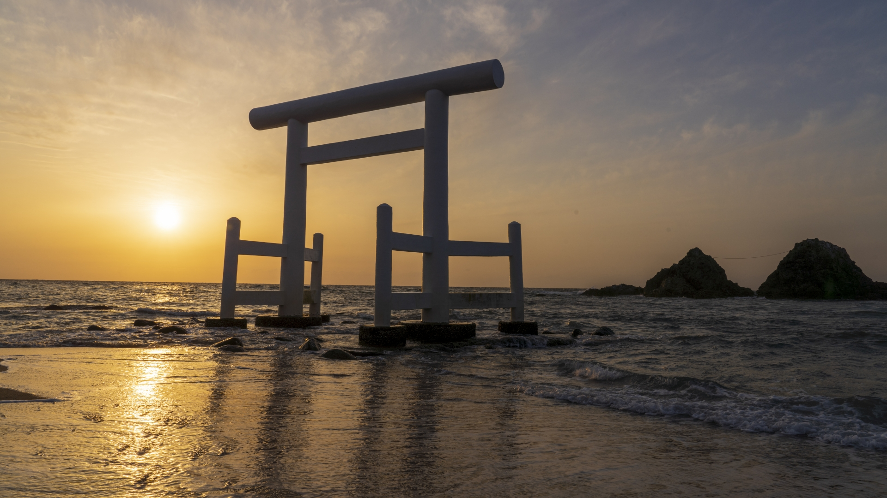
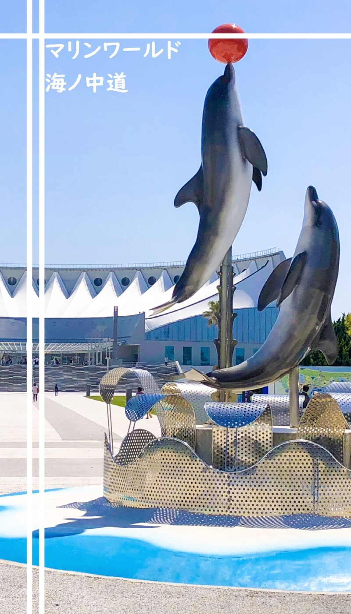
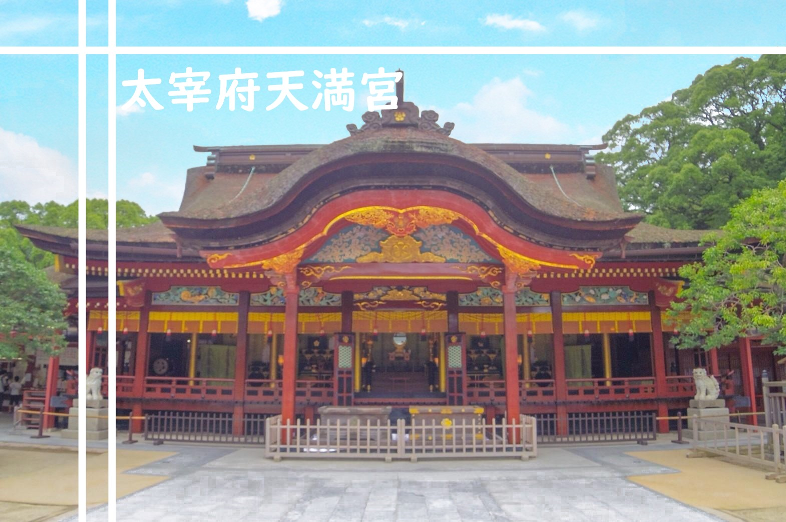

キャナルシティ博多
 敷地面積約4万3500平方メートルを誇る大型複合商業施設。
敷地面積約4万3500平方メートルを誇る大型複合商業施設。
敷地中央を流れる運河を中心に、ショッピングモールやレストラン、ホテル、映画館、劇場などの建物が並び、
さらに3Dプロジェクションマッピングと噴水のアクアパノラマなどエンターテイメントも楽しめる。
Always open
|
Open |
Close |
| Shop |
10:00 |
21:00 |
| Restaurant |
10:00 |
23:00 |
|
Maximum fee |
Parking Fee |
| Weekday |
All day |
200yen/30minutes |
| Weekend |
All day |
200yen/30minutes |
マリンワールド海ノ中道

「いつも新しい私になれる水族館」をコンセプトに、海をより身近に感じられるリゾート施設へリニューアルした。
九州各県を代表する約350種類・3万匹の生物の展示、迫力あるイルカとアシカのショー、
パネル展示や体験型ワークショップなど、楽しめる要素が満載。
|
Open |
Close |
| off-season |
9:30 |
17:30 |
| GW/Summer holidays |
9:30 |
21:00 |
| Dec-Feb |
10:00 |
17:00 |
| Oct 30th Halloween night |
9:30 |
21:00 |
| Dec 24th 25th Christmas night |
10:00 |
21:00 |
|
Adults |
High School Students |
| Single |
2,350 yen |
2,350 yen |
| Annual Passport |
4,600 yen |
4,600 yen |
|
truck/bus |
passenger car |
motorcycle |
| Parking Fee |
1,580 yen |
530 yen |
270 yen |
マリノアシティ福岡
 大きな観覧車がランドマークのアウトレットモール。ファッション、インテリア、雑貨など人気のショップが集まり、
大きな観覧車がランドマークのアウトレットモール。ファッション、インテリア、雑貨など人気のショップが集まり、
休日には県内外から多くの客が詰めかける。海風が気持ちよく、散歩にもここちよいエリア。
Always open
|
Open |
Close |
| Shop |
10:00 |
21:00 |
| Restaurant |
11:00 |
23:00 |
|
Weekday |
Weekend(holidays) |
| Parking Area 1 |
9:45~23:00 |
9:00~23:00 |
| Parking Area 2 |
9:45~21:00 |
9:00~21:00 |
| Parking Area 3 |
9:45~21:00 |
9:00~21:00 |
| Parking Area 4 |
7:00~21:00 |
7:00~21:00 |
太宰府天満宮・九州国立博物館

新元号「令和」ゆかりの地として注目を集める太宰府。
観光の中心となる「太宰府天満宮」は、学問の神様として有名な菅原道真公が祀られており、
境内には、軍師官兵衛が晩年を過ごした「如水社」や、幕末に商人から寄付された「麒麟像」など、
歴史を感じられるスポットが多数あります。
鳥居前にある隈研吾氏が手がけたおしゃれな「スターバックスコーヒー」も人気です。
|
Open |
Close |
| 太宰府天満宮 |
06:00 |
19:00(9月~11月) 18:00(12月~3月) |
| 九州国立博物館 |
09:30 |
17:00 |
|
Parking |
| 太宰府天満宮 |
なし |
| 九州国立博物館 |
500yen |